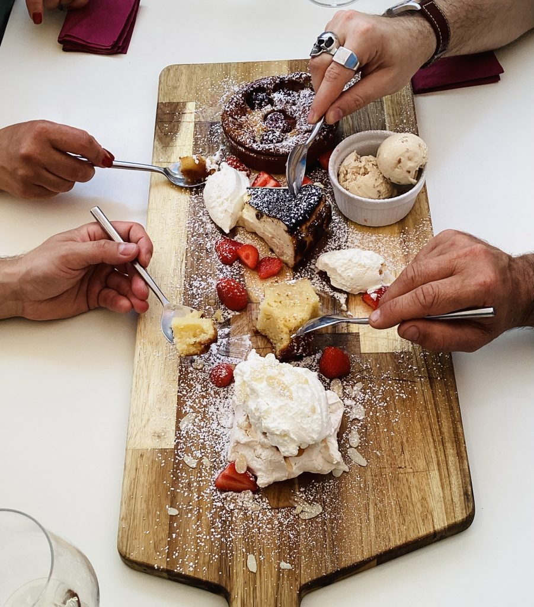
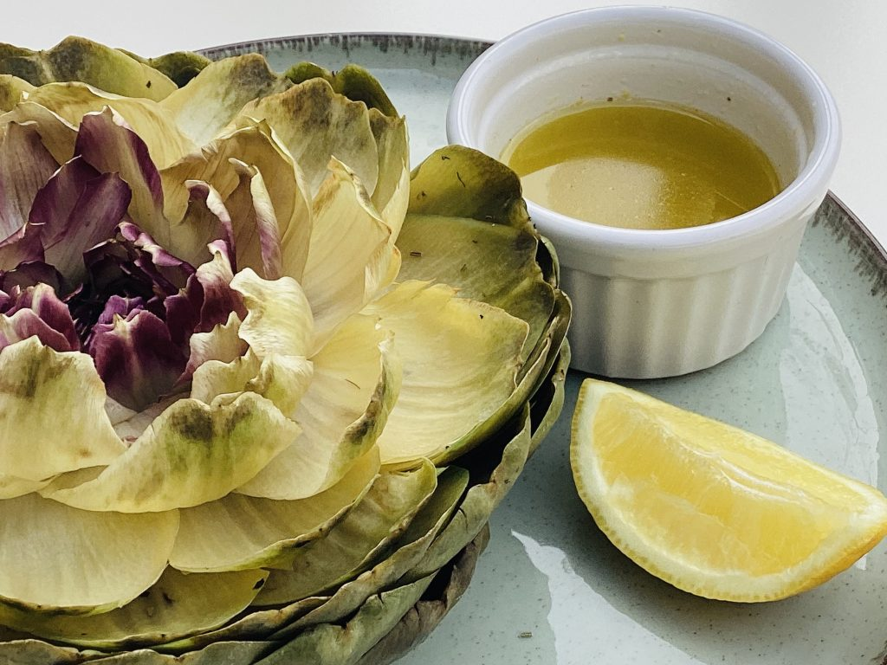
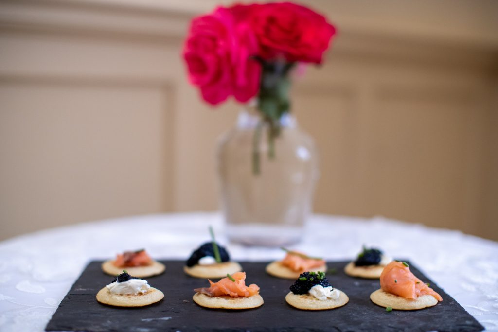
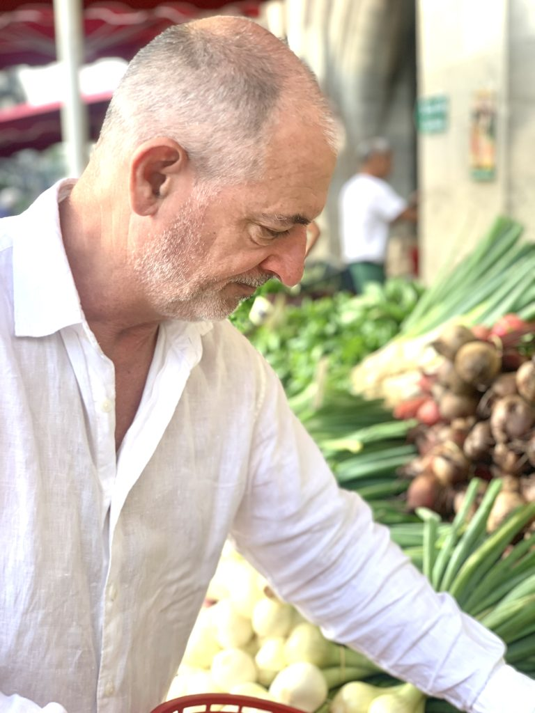
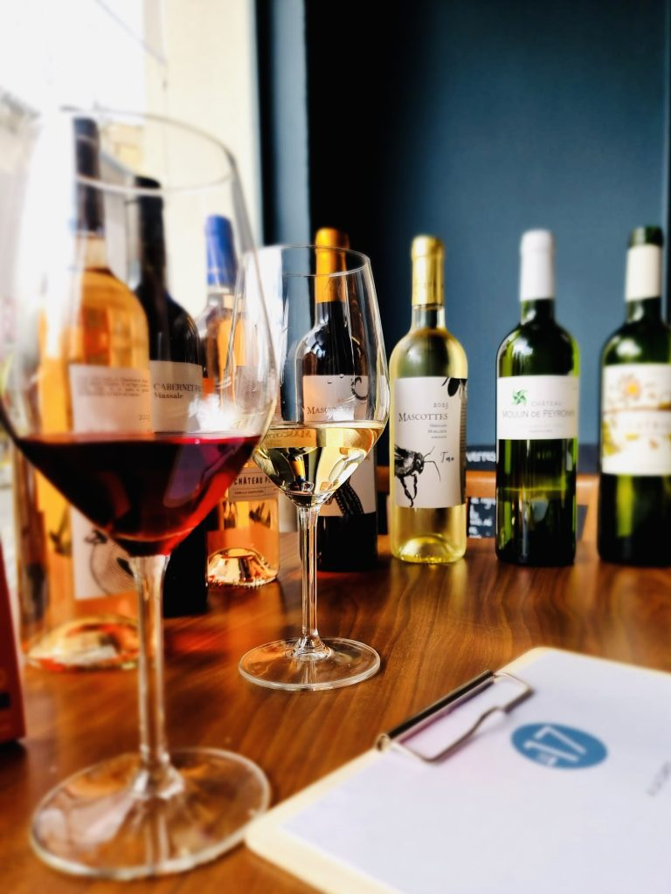

Thoughtfully prepared, beautifully balanced, and made from seasonal, locally grown ingredients.
Our meals are designed to nourish you — thoughtfully prepared, beautifully balanced, and made from seasonal, locally grown ingredients. We take great care to accommodate individual dietary needs so that every guest feels looked after.
Late April is an ideal moment for this retreat: the markets are full of new-season produce, and the energy of spring naturally invites renewal. Expect tender white and green asparagus, broad beans, fresh peas, the first strawberries, and vibrant spring herbs — ingredients that truly shine at this time of year.



All dishes will be curated and prepared by celebrated Executive Chef Michael of local gem, Le Dix Sept. Michael's cooking brings a fresh, generous, and contemporary touch to the abundance and diversity of the local culinary availability.
In the French spirit of eating well, our main meal will be served at lunchtime, with a lighter, more relaxed meal in the evening — exactly as it should be done.

Throughout the week, we'll pair a selection of Bordeaux wines with our meals for those who wish to discover the region's extraordinary diversity. You're in the heart of one of the world's most celebrated wine regions — it would be a shame not to explore it.
For guests who prefer not to drink alcohol, high-quality non-alcoholic artisanal drinks will be offered. No one will ever feel pressured or left out — our focus is on enjoyment, not excess.

The markets of Sainte-Foy-la-Grande come alive in late April. Here's what's in season when you arrive.
The prized harbinger of spring, at peak perfection in late April.
Bright, sweet, and just-picked from local farms surrounding the maison.
The Gariguette variety — France's beloved spring strawberry, intensely fragrant.
Tarragon, chervil, chives and flat-leaf parsley — vibrant and full of flavour.
Six to eight women, a maison de maître, Chef Michael's table, and the finest wines of Bordeaux. Come join us.